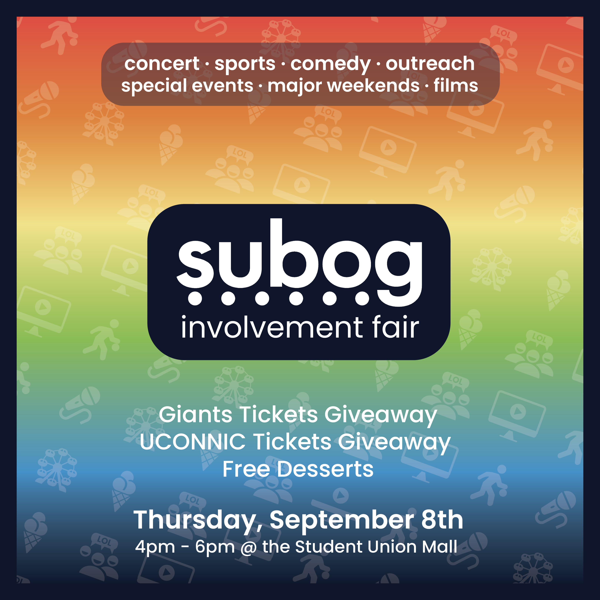
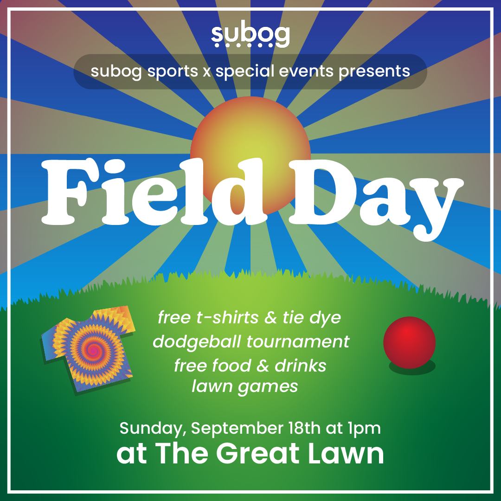
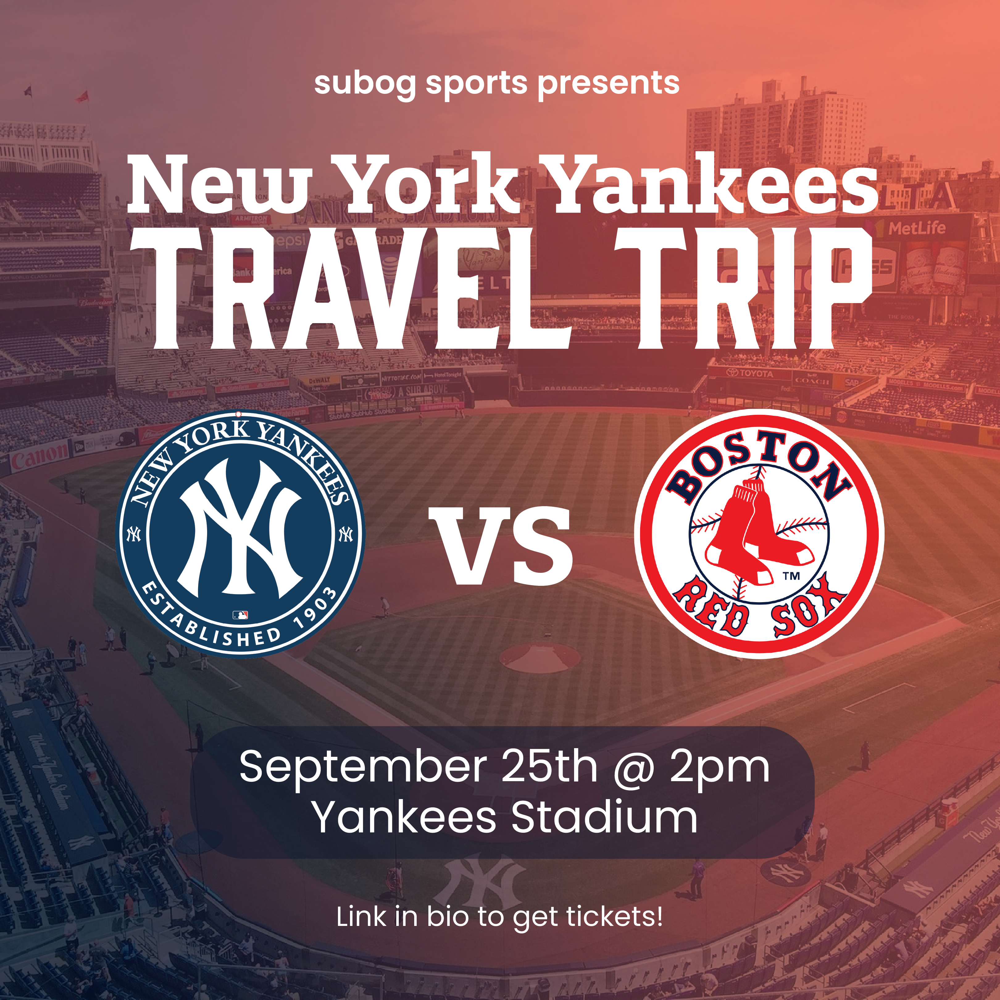
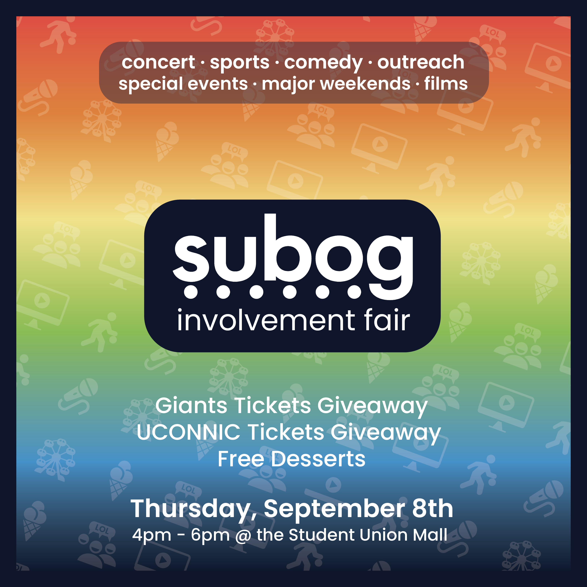
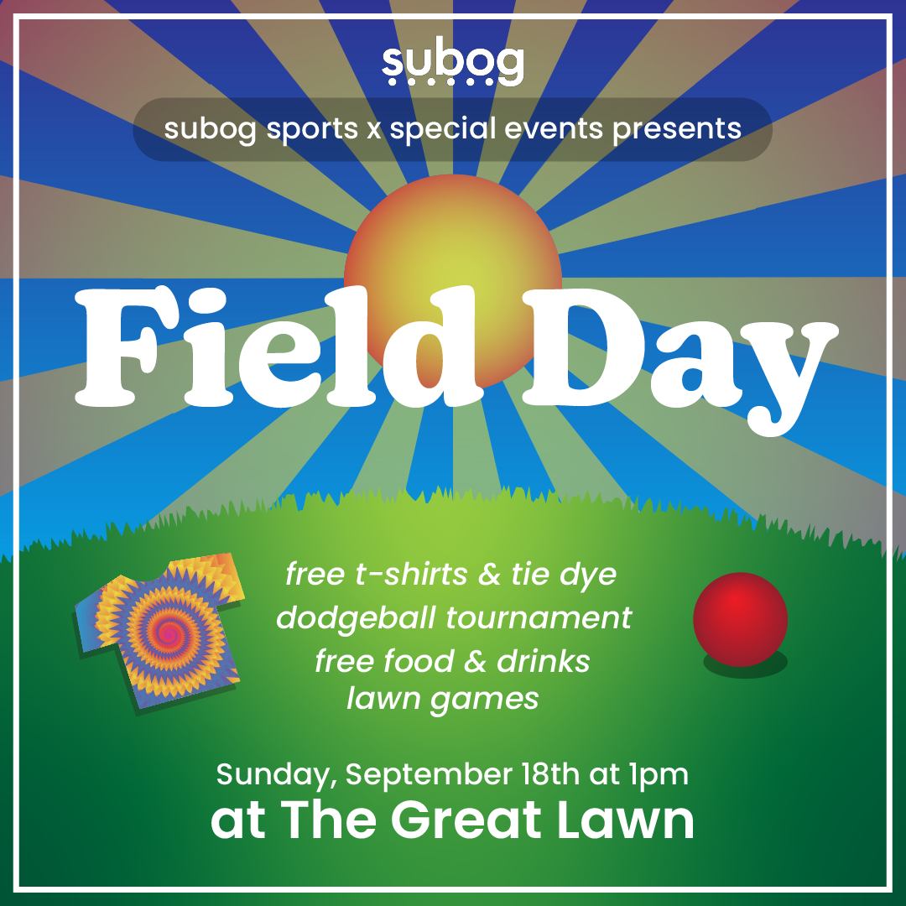
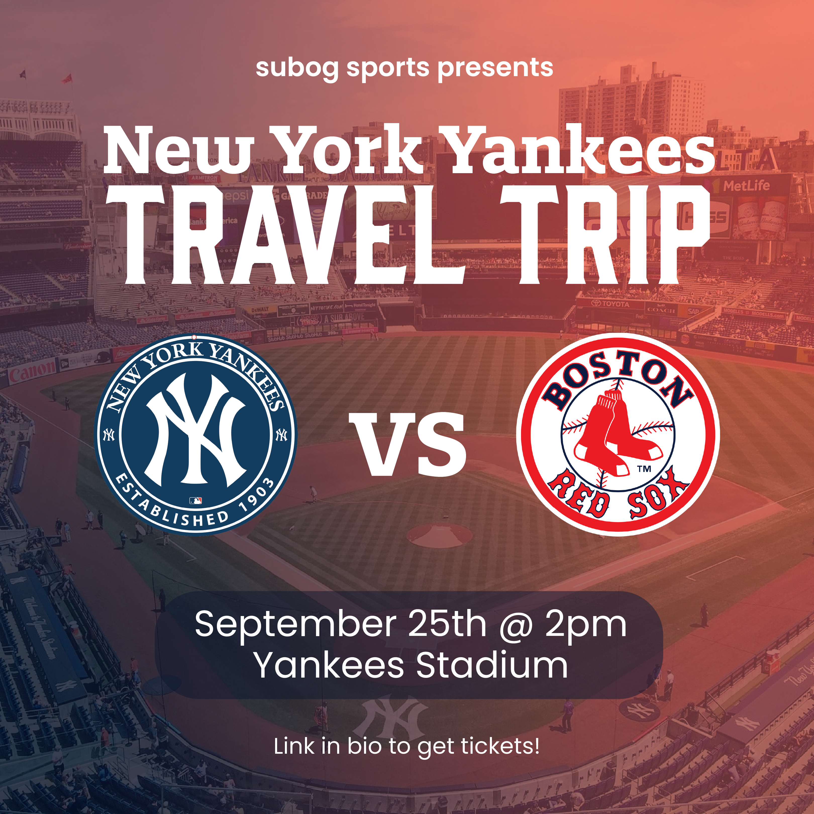

Graphic Design
As the Vice Chair of Design for outreach in SUBOG, I colaborate with the other 6 committees to create graphics for their events
The Brainstorming Process
- Receive fact sheet describing the event from my chairs
- Brainstorm with the chairs about what they envision for the graphic
- Finalize design of the graphic
The Design Process
- Use Photoshop to composite any portions of the background and export
- Use Illustrator to design any vector graphics and text on the image and export
- Use Lightroom to make adjustments to finalize the look
- Finalize design of the graphic
Example Work
 




